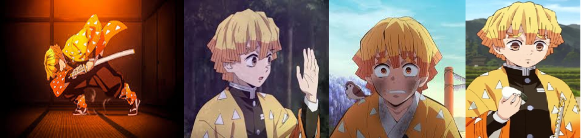

Bonjour et bienvenus sur cette page ! Ici, vous trouverez toutes sortes d'informations sur Zenitsu Agatsuma, un des personnage principaux de Kimetsu no Yaiba. En espérant que les informations ci-dessous vous seront utile, nous vous laissons désormais à la découvertes de cette page !
Qui est Zenitsu Agatsuma ?
Zenitsu Agatsuma est un pourfendeur de démons membre de l'Armée des pourfendeurs de démons. Il est le compagnon de voyage de Tanjiro Kamado et l'un des protagonistes du manga et anime Demon Slayer: Kimetsu no Yaiba.
Apparence
Zenitsu est un jeune homme à la peau claire et aux yeux allant d'un brun clair à du jaune or. Il a des cheveux courts, blonds aux mèches de longueurs différentes, d'un orange plus foncé aux pointes, qui tombent sur son visage en une frange mal coupée.
Avant de devenir un pourfendeur de démon, les cheveux de Zenitsu étaient noirs, mais ils prirent cette couleur après qu'il soit frappé par la foudre durant son entraînement.
Après la bataille au Mont Natagumo, ses membres furent temporairement rétréci à cause du Poison démoniaque mais sont retournés à leur taille normale grâce aux médicaments donnés par Shinobu Kocho, le pilier de l'insecte.
Il porte une version plus claire de l'uniforme standard du Pourfendeur de démon, qui consiste en une veste gakuran marron foncé, une ceinture blanche autour de la taille et un pantalon hakama, ainsi que son haori jaune dégradé orange à triangles blancs. De plus, Zenitsu porte des chaussettes tabi attachées sur le devant en 3, avec le même motif que son haori, et des chaussures blanches.
Personnalité
Zenitsu est un lâche, affirmant tout le temps qu'il va bientôt mourir à cause de son travail risqué de Pourfendeur de démons. Il a aussi une plutôt basse estime de soi malgré sa force, au point de penser qu'il est inutile. Zenitsu a (presque) tout le temps peur, pleurant constamment, et essayant toujours de fuir au moindre signe de danger, clamant qu'il veut vivre une vie normale et modeste au lieu d'être un Pourfendeur de démon, car il pense être inutile.
Cependant, malgré ces faiblesses, Zenitsu veut quand même vivre au niveau des attentes que les gens ont de lui et essaye de son mieux s'il le peut. Il a beaucoup de respect et d'admiration envers ses camarades et son professeur décédé, Jigoro Kuwajima, et sa concentration et son souhait de le venger l'aide toujours à mettre de côté sa lâcheté et ses doutes au moment critique.
Zenitsu semble aussi être aussi un coureur de jupons. Venant du désir de ne pas être célibataire si il vient à mourir; il tend à accoster et essayer de séduire des femmes qu'il trouve mignonnes et leur demande de l'épouser, ce qui finit par les irriter. Ce trait de caractère outrepasse sa personnalité docile, en particulier quand il croit que ses camarades sont en train de flirter avec des jolies filles, il devient alors hystérique et se plaint longuement. Durant ces moments, il est aussi montré agressif physiquement.
Histoire
Quand Zenitsu était jeune, il était supporté financièrement par une femme endettée. Elle s'était enfuie avec Zenitsu, ce qui lui a causé des problèmes, et ce fut Jigoro, l'ancien Pilier de la Foudre, qui le sauva.
Ce dernier décidé d'entraîner Zenitsu avec son plus ancien disciple, Kaigaku. Un jour, Zenitsu grimpa à un arbre parce qu'il pensait qu'il décevait son maître, quand soudainement, un éclair le frappa, ce qui rendit ses cheveux blonds.
Zenitsu et Kaigaku se détestaient, cependant, Zenitsu le respectait et tenait à lui. Éventuellement, Zenitsu voulait se battre aux côtés de Kaigaku un jour. Ainsi, il créa le Septième Mouvements du Souffle de la Foudre: Dieu du Feu Céleste.
Merci à vous d'avoir visitez ce site, et plus particulièrement cette page, en espérant que celle-ci vous aura été utile !
Aptitudes et compétences
Aptitudes naturelles
Ouïe surhumaine : Zenitsu a une ouïe surdeveloppée, ce qui lui permet de détecter le danger avec mêmes les sons les plus faibles. Il est aussi capable d'entendre les pensées intérieures des gens si il utilise son sens à son maximum. Il peut utiliser ce don pour l'aider à localiser des démons en comparant les sons produits par un démon et ceux produits par un humain.
Combat inconscient : Zenitsu est plus puissant quand il dort. Quand sa vie est en danger, la peur qu'il ressent dépasse les limites que peuvent supporter son corps et le fait s'évanouir, ce qui le fait atteindre son vrai potentiel; quand Zenitsu est endormi, il manie l'épée à haut niveau et ce seulement basé sur son instinct. Cependant, alors que l'histoire continue, il perfectionne ses compétences et courage et dépend de moins en moins sur cette aptitude, commençant à montrer les mêmes talents en étant conscient.
Aptitude à l'épée
Souffle de la Foudre
Il lui a été enseigné par l'ancien Pilier de la Foudre, Jigoro Kuwajima. Cette technique augmente sa force et agilité pour atteindre celles d'un démon. Il y a six mouvements, mais Zenitsu ne pouvait apprendre que la première, soit la base pour les autres, mais il la perfectionna au point de pouvoir battre plusieurs puissants démons. Il crée plus tard un septième mouvement et vainc son aîné devenu la Sixième Lune Supérieur des Douze Lunes Démoniaques.
Techniques
Premier Mouvement : Frappe Foudroyante
L'utilisateur se précipite vers l'ennemi et le tue à une vitesse surhumaine. Zenitsu a pu utiliser ce mouvement à son maximum afin de le répéter plusieurs fois très vite.
Premier Mouvement : Frappe Foudroyante - Six Coups
Une variante du Premier Mouvement avec une série de six traits.
Premier Mouvement : Frappe Foudroyante - Huit Coups
Une variante du Premier Mouvement avec une série de huit traits.
Premier Mouvement : Frappe Foudroyante - Vitesse Divine
L'utilisateur utilise cette technique pour augmenter la vitesse de sa Frappe Foudroyante.
Septième Mouvement : Dieu du Feu Céleste
Zenitsu a crée lui-même le Septième Mouvement. L'utilisateur crée un dragon émettant du feu et de la foudre.
Ce mouvement associé à la Vitesse de Dieu permet à Zenistu d'être extrêmement rapide, lui permettant de vaincre la Sixième Lune, Kaigaku.
Avant que ce dernier meure, Zenitsu avoue que ce mouvement lui est unique et qu'il l'a crée en espérant pouvoir se battre avec lui en tant qu'égal
Relations
Tanjiro Kamado
Zenitsu dépend souvent de Tanjirô durant des situations intenses, comme lorsqu'ils rencontrent des démons. Zenitsu respecte et admire son leadership mais le ridiculise de jalousie lorsque Tanjiro mentionne ses rencontres avec des filles sans Zenitsu. Ils coopèrent bien en pleine bataille.
Nezuko Kamado
Malgré son immense peur des démons, Zenitsu développe un béguin pour Nezuko. Il essaie souvent de la faire accepter de l'épouser et n'oublie jamais de mentionner son amour pour elle toutes les fois où il la voie.
Cependant, plus tard, il se calme en présence de Nezuko et devient un peu moins agressif. Il lui raconte souvent les missions avec Tanjiro qu'elle rate et lui promet à un moment de l'emmener dans un champ de fleurs.
Zenitsu protège aussi Nezuko plusieurs fois quand elle est en danger, comme lors de sa première rencontre avec Inosuke Hashibara ou de la bataille dans le train contre Enmu.
Kaigaku
Zenistu et Kaigaku ont été tous les deux entraînés par Jigoro Kuwajima comme successeurs du Souffle de la Foudre. Animosité mise de côté, Zenitsu a beaucoup de respect envers lui, au point de frapper d'autres Pourfendeurs de démon l'ayant critiqué dans son dos. Kaigaku, de son côté, a toujours rabaissé Zenitsu en l'appelant "poussière" à cause de son manque de force.
Après que Kaigaku devienne un démon et que Jigoro commet seppuku, comme conséquence de ce crime, Zenitsu décide de tuer Kaigaku et de venger la mort de son maître.
Jigoro Kuwajima
Jigoro rencontre Zenitsu quand il le sauve d'un dilemme financier, le prenant pour entraîner le jeune homme à devenir un sabreur et recevant grand respect et appréciation par ce dernier par la suite. Sous le mentor de Jigoro, Zenitsu apprend le Souffle de la Foudre aux côtés d'un autre élève, Kaigaku. Jigoro était stricte envers Zenitsu à cause de son inexpérience, mais n'a jamais arrêté de l'enseigner sans abandonner. Quand il est plus tard révélé à Zenitsu que son maître a commis seppuku seul après que Kaigaku a accepté de se transformer en démon, Zenitsu est à la fois choqué et enragé envers Jigoro, ressentant une immense peine par la mort de sa figure paternelle. Cependant, cette disparition cause à Zenitsu de se concentrer immédiatement sur son entraînement afin de pouvoir laisser son mentor reposer en paix en devenant assez fort pour tuer Kaigaku et blanchir le nom de Jigoro.
Inosuke Hashibara
Zenitsu et Inosuke ne s'entendent généralement pas bien malgré le fait qu'ils soient dans la même équipe. Cependant, en situations critiques, ils arrivent à coopérer. Inosuke est admiratif des aptitudes de Zenitsu quand il est endormi, suggérant qu'il devrait dormir pour toujours après avoir vu la façon dont il se bat pour la première fois.
Merci à vous d'avoir visitez ce site, et plus particulièrement cette page, en espérant que celle-ci vous aura été utile !
さようなら ！
AU REVOIR !